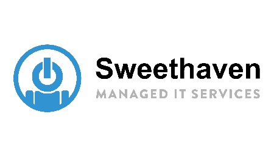

Zihad Wadud Ansari
IT Services Technician — Four Agency Worldwide
- Managed user account and access permission in Active Directory by configuring user attributes, handling group memberships, and folder-level permissions assignments for appropriate resource access.
- Conducted more than 50 device builds & updates using SCCM and Action1, ensuring the timely update deployment of operating system, application, and security patches across managed Windows devices.
- Administration across Microsoft 365 Admin Centers, including user provisioning in Entra ID, MS group and distribution list management via Exchange Admin and ensuring devices compliance on Intune Admin.
Date: November 2024 — March 2025
1st Line Technician — Sweethaven Computers Ltd
- Configured permission and settings through Active Directory and Group Policy on bespoke devices/users.
- Management of Windows devices with SCCM, utilising network PXE Boot for streamlined deployment, automated cumulative updates, and centralised remote control.
- Identified and resolved hardware issues, including physical connectivity problems (damaged port panels, network cables), boot-up memory errors, and HDD/SSD replacements.
- Conducted network port patching and unpatching, simultaneously ensuring accurate port assignments.
- Addressed wireless connectivity issues with WAPs (via Fortinet system controller) by performing reboots, conducting switch checks, and verifying IP assignments.
Date: September 2023 — September 2024
1st Line Support Analyst — Imperial College London
- Deployed as a member of the Rapid Response Team (RRT) to provide immediate first-line support for audio-visual (AV) systems and hardware machines.
- Responded to urgent requests (top priority) for technical assistance via a combination of ITSM (ServiceNow), phone (AV Emergency Line), and face-to-face support within the SLA time period.
- Managed setups for AV systems in lecture/event spaces and PC initial setups in computing rooms, ensuring AV software are operational and PC boot-up and network login tests are completed seamlessly.
- Utilised Powershell scripts to automate the network build process for Windows AV & Cluster machines.
- Conversant with the driver updates/security patches of audio-visual systems, cluster desktop machines, systems OS, and related core machine services [via Splunkbase].
Date: January 2023 — September 2023